L3 Formation of the Solar SystemL3 Sự hình thành Hệ Mặt Trời
We did not watch the Solar System form, so we build a theory and test it against today's evidence and against other planetary systems. A flat rotating disk explains the orderly motions; temperature (the frost line) explains two kinds of planets; collisions explain the oddities; radioactive decay gives the age, 4.6 billion years.Chúng ta không chứng kiến Hệ Mặt Trời hình thành, nên xây dựng một lý thuyết và kiểm tra nó với bằng chứng hôm nay và với các hệ hành tinh khác. Đĩa dẹt quay giải thích chuyển động có trật tự; nhiệt độ (đường băng) giải thích hai loại hành tinh; va chạm giải thích những điều lạ; phân rã phóng xạ cho tuổi, 4,6 tỉ năm.
L3 40 slide pages · 36 practice questions40 trang slide · 36 câu luyện tập · Practice this lectureLuyện bài này
Memory hooksMẹo nhớ
How to build a theory of the pastXây dựng lý thuyết về quá khứ
- We did not observe the origin, so theories must match circumstantial evidence: what the Solar System is like today. [L3 p3]Ta không quan sát nguồn gốc, nên lý thuyết phải khớp bằng chứng gián tiếp: Hệ Mặt Trời hôm nay trông thế nào. [L3 tr.3]
- Test a hypothesis by quantitative predictions compared with the Solar System and other systems: pencil-and-paper calculations, then computer models; it must be confirmed by many scientists. [L3 p5]Kiểm tra giả thuyết bằng dự đoán định lượng so với Hệ Mặt Trời và các hệ khác: tính tay rồi mô hình máy tính; phải được nhiều nhà khoa học xác nhận. [L3 tr.5]
- Main points: all planets formed from the same cloud at the same time; some variety is due to chance events such as collisions; discovery of disks and planets around other stars means planet formation is common in the Galaxy. [L3 p3]Ý chính: mọi hành tinh hình thành từ cùng đám mây cùng lúc; một phần sự đa dạng do biến cố ngẫu nhiên như va chạm; phát hiện đĩa và hành tinh quanh sao khác nghĩa là sự hình thành hành tinh phổ biến trong Ngân Hà. [L3 tr.3]
- In a nutshell: Earth, Sun and the rest formed from a cloud of gas and dust about 4.6 billion years ago; planets reflect their distance to the hot proto-Sun; some had big collisions; comets and asteroids are leftover debris. [L3 p4]Tóm lại: Trái Đất, Mặt Trời và phần còn lại hình thành từ đám mây khí và bụi khoảng 4,6 tỉ năm trước; hành tinh phản ánh khoảng cách tới proto-Sun nóng; một số trải qua va chạm lớn; sao chổi và tiểu hành tinh là mảnh vụn còn lại. [L3 tr.4]


Patterns the theory must explainCác quy luật lý thuyết phải giải thích
- Large bodies move in an orderly way in a plane; two kinds of planets (small rocky terrestrial, large hydrogen-rich Jovian); asteroids and comets live in certain regions; there are exceptions. [L3 p6]Các vật lớn chuyển động có trật tự trong một mặt phẳng; hai loại hành tinh (đá nhỏ - terrestrial, giàu hydro lớn - Jovian); tiểu hành tinh và sao chổi ở những vùng nhất định; có ngoại lệ. [L3 tr.6]
- Orderly motions: the Sun formed in the centre of the nebula (fusion); the planets formed in the rest of the disk. Hence one plane, one direction, the Sun rotates the same way, most moons orbit the same way, most orbits near circular (collisions in the disk). [L3 p12]Chuyển động có trật tự: Mặt Trời hình thành ở tâm tinh vân (nhiệt hạch); hành tinh hình thành trong phần đĩa còn lại. Vì thế: một mặt phẳng, một chiều, Mặt Trời quay cùng chiều, hầu hết vệ tinh quay cùng chiều, hầu hết quỹ đạo gần tròn (va chạm trong đĩa). [L3 tr.12]
- Concept question (no answer on the slide): the material of the Sun was once part of the Big Bang, another star, a molecular cloud, a protostar: all of the above (our reasoning: H and He from the Big Bang, heavier elements from earlier stars, then cloud and protostar stages). [L3 p13, p40]Câu hỏi khái niệm (slide không có đáp án): vật chất của Mặt Trời từng là một phần của Vụ Nổ Lớn, một sao khác, đám mây phân tử, tiền sao: tất cả các ý trên (lập luận của ta: H và He từ Vụ Nổ Lớn, nguyên tố nặng từ các sao trước, rồi giai đoạn mây và tiền sao). [L3 tr.13, 40]
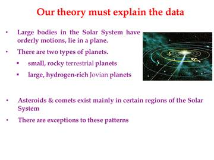
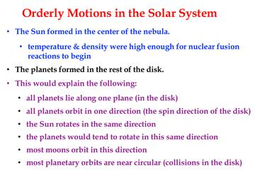
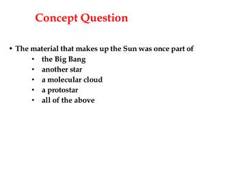
Other stars test the theorySao khác kiểm tra lý thuyết
- With infrared cameras and HST, Kepler, TESS, scientists identified many exoplanetary systems and regions where stars and planets are forming: tests of the nebular hypothesis. [L3 p7]Nhờ camera hồng ngoại và HST, Kepler, TESS, các nhà khoa học xác định nhiều hệ ngoại hành tinh và vùng đang tạo sao, hành tinh: kiểm tra giả thuyết tinh vân. [L3 tr.7]
- Examples on the slides: exoplanetary systems, 'planet(s) or moon(s)?', HR 8799 (12-year time-lapse of four planets), dust continuously replenished by collisions between planetesimals. [L3 p8-11]Ví dụ trên slide: các hệ ngoại hành tinh, 'hành tinh hay vệ tinh?', HR 8799 (time-lapse 12 năm của bốn hành tinh), bụi liên tục được bổ sung nhờ va chạm giữa các planetesimal. [L3 tr.8-11]
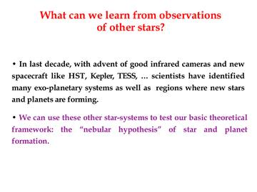
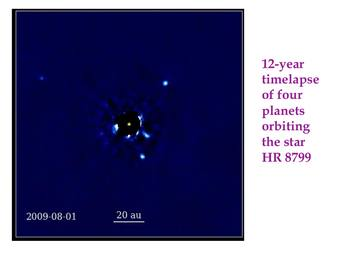
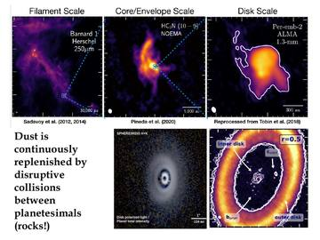
Planets form in a diskHành tinh hình thành trong đĩa
- Five steps: (a) flattened cloud of gas and dust; (b) dust settles to the midplane and accumulates into planetesimals; (c) the protosun heats up and its wind blows the gas away; (d) protoplanets grow by accretion; (e) the modern Solar System. [L3 p14]Năm bước: (a) đám mây khí - bụi dẹt; (b) bụi lắng xuống mặt phẳng giữa và tụ lại thành planetesimal; (c) proto-Sun nóng lên, gió của nó thổi khí đi; (d) tiền hành tinh lớn lên bằng tích tụ; (e) Hệ Mặt Trời hiện nay. [L3 tr.14]

Condensation and the frost lineNgưng tụ và đường băng
- Condensation: gas turns directly to solid (like a snowflake). The nebula slowly cooled; regions near the Sun were warmer; the pattern of condensation followed local temperature. [L3 p15]Ngưng tụ: khí chuyển thẳng thành rắn (như bông tuyết). Tinh vân nguội dần; vùng gần Mặt Trời nóng hơn; kiểu ngưng tụ theo nhiệt độ tại chỗ. [L3 tr.15]
- Inner system: little gas left (too hot, blown away). Outer system: rocky cores accrete gas and dust from the leftover disk (Jupiter as a mini solar system), so outer planets become big. [L3 p16]Hệ trong: còn ít khí (quá nóng, bị thổi đi). Hệ ngoài: lõi đá hút khí và bụi từ đĩa còn lại (Mộc tinh như một hệ Mặt Trời thu nhỏ), nên hành tinh ngoài lớn lên. [L3 tr.16]
- Frost line: inside, too hot for hydrogen compounds to form ices; outside, cold enough. It separates rock-metal planets from gas-ice planets. Diagram: ices of CO₂, CH₄, N₂ and H₂O, metal and rock; labels 2000 K, 300 K, 50 K (the labels do not line up with each substance: read it qualitatively). [L3 p17-20]Đường băng: bên trong quá nóng để hợp chất hydro thành băng; bên ngoài đủ lạnh. Nó phân cách hành tinh đá - kim loại với hành tinh khí - băng. Sơ đồ: băng CO₂, CH₄, N₂ và H₂O, kim loại và đá; nhãn 2000 K, 300 K, 50 K (nhãn không thẳng hàng với từng chất: đọc theo ý chính). [L3 tr.17-20]
- What we do not see now: no disks older than ~10 Myr; gas swept away by strong stellar winds of young stars; Earth's atmosphere is secondary (the original was swept away). [L3 p21]Điều ta không còn thấy: không có đĩa già hơn ~10 triệu năm; khí bị gió sao mạnh của sao trẻ quét sạch; khí quyển Trái Đất là thứ cấp (khí quyển ban đầu bị quét đi). [L3 tr.21]
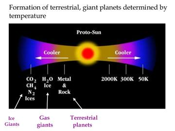
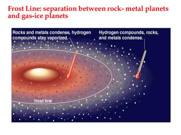

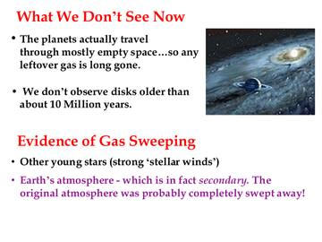
Two scenarios for giant planetsHai kịch bản cho hành tinh khổng lồ
- Core accretion (Boss 2002): dust → pebbles → planetesimals → planets; ice particles outside the frost line; big planets pull in H and He. Time 0.1 → 7 → 10 Myr; the slide's comparison page gives 3 to 10 Myr. [L3 p22-23]Tích tụ lõi (Boss 2002): bụi → sỏi → planetesimal → hành tinh; hạt băng ngoài đường băng; hành tinh lớn hút H và He. Thời gian 0,1 → 7 → 10 triệu năm; trang so sánh của slide ghi 3 đến 10 triệu năm. [L3 tr.22-23]
- Disk instability / gas collapse (Boss 2002): a gravitationally unstable disk forms a self-gravitating planet very fast: 0.1 Myr on p22, but the figure on p25 is labelled t = 1 Myr (the slides differ). [L3 p22, p25]Bất ổn đĩa / sụp đổ khí (Boss 2002): đĩa bất ổn trọng lực tạo hành tinh tự hấp dẫn rất nhanh: 0,1 triệu năm ở tr.22, nhưng hình tr.25 ghi t = 1 triệu năm (slide không thống nhất). [L3 tr.22, 25]
- Disk instability: pros, it can be natural and happens very fast; cons, the disk is usually not unstable, and it does not explain the difference between terrestrial planets, gas giants and ice giants. [L3 p25]Bất ổn đĩa: ưu điểm, có thể tự nhiên và rất nhanh; nhược điểm, đĩa thường không bất ổn, và không giải thích được khác biệt giữa hành tinh đá, khí khổng lồ và băng khổng lồ. [L3 tr.25]
- Moons of the jovian planets probably formed in miniature disks. [L3 p24]Vệ tinh của các hành tinh Mộc có lẽ hình thành trong các đĩa thu nhỏ. [L3 tr.24]

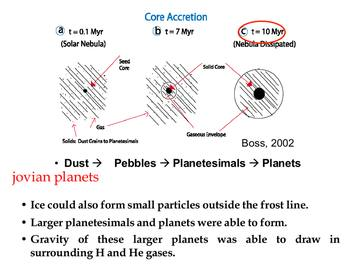

Impacts, the Moon, asteroids and cometsVa chạm, Mặt Trăng, tiểu hành tinh và sao chổi
- Evidence of intense early bombardment: Mercury lost most of its rocky mantle; the Moon formed from a collision with Earth that removed a chunk of the mantle; Venus rotates oddly; Uranus is tilted; a huge impact on Mars (dichotomy of its two hemispheres); crater studies. [L3 p26-27]Bằng chứng về bắn phá mạnh thời kỳ đầu: Thủy tinh mất phần lớn lớp phủ đá; Mặt Trăng hình thành từ va chạm với Trái Đất làm bay một mảng lớp phủ; Kim tinh quay lạ; Thiên Vương nghiêng; một va chạm lớn trên Hỏa tinh (hai bán cầu khác nhau); nghiên cứu hố va chạm. [L3 tr.26-27]
- Heavy bombardment: leftover planetesimals hit other objects in the late stage; water may have come to Earth with icy planetesimals. [L3 p27]Bắn phá dày đặc: planetesimal còn lại va vào các vật khác ở giai đoạn muộn; nước có thể đến Trái Đất cùng planetesimal băng. [L3 tr.27]
- Origin of the Moon, four ideas: (a) formed together with Earth, (b) captured, (c) broke off the Earth, (d) giant impact of Earth with another large body. The slide's earlier page and the molten early Earth point to (d). [L3 p26, p28]Nguồn gốc Mặt Trăng, bốn ý: (a) hình thành cùng Trái Đất, (b) bị bắt giữ, (c) tách ra từ Trái Đất, (d) va chạm khổng lồ giữa Trái Đất và một vật lớn khác. Trang trước của slide và việc Trái Đất sớm nóng chảy chỉ về (d). [L3 tr.26, 28]
- Asteroids are rocky, comets are icy; both are leftovers. Asteroids: leftover rocky planetesimals not accreted. Comets: leftover icy planetesimals; those between the jovian planets were flung into the Oort cloud, those beyond Neptune stayed in the ecliptic plane as the Kuiper belt. Sample-return missions: Genesis, Stardust, Hayabusa. Pluto: asteroids kicked into planetary orbit by a collision? [L3 p30-34]Tiểu hành tinh là đá, sao chổi là băng; cả hai là phần còn lại. Tiểu hành tinh: planetesimal đá còn lại không tích tụ. Sao chổi: planetesimal băng còn lại; những cái nằm giữa các hành tinh Mộc bị ném vào đám mây Oort, những cái ngoài Hải Vương ở lại mặt phẳng hoàng đạo thành vành đai Kuiper. Sứ mệnh mang mẫu về: Genesis, Stardust, Hayabusa. Diêm Vương: tiểu hành tinh bị va chạm đẩy vào quỹ đạo hành tinh? [L3 tr.30-34]


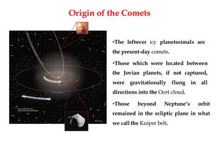
The age of the Solar SystemTuổi của Hệ Mặt Trời
- Radioactive isotopes are unstable and decay into more stable elements: parent and daughter, for example K-40 (parent) → Ar-40 (daughter). [L3 p36]Đồng vị phóng xạ không bền và phân rã thành nguyên tố bền hơn: đồng vị mẹ và con, ví dụ K-40 (mẹ) → Ar-40 (con). [L3 tr.36]
- Half-life: the time for half of a radioactive isotope to decay. The graph marks 1, 2, 3 half-lives at 1.25, 2.5, 3.75 billion years, with the remaining fraction 0.5, 0.25, 0.125. [L3 p37]Chu kỳ bán rã: thời gian để một nửa đồng vị phóng xạ phân rã. Đồ thị đánh dấu 1, 2, 3 chu kỳ bán rã ở 1,25; 2,5; 3,75 tỉ năm, phần còn lại 0,5; 0,25; 0,125. [L3 tr.37]
- Method: measure the stable isotope that exists only because of the decay and the radioactive isotope; the ratio and the half-life give the age of the rock. [L3 p37]Phương pháp: đo đồng vị bền chỉ tồn tại nhờ phân rã và đồng vị phóng xạ; tỉ lệ và chu kỳ bán rã cho tuổi của đá. [L3 tr.37]
- Radiometric dating measures only the time since the rock solidified. Earth's rocks melt and resolidify, so they cannot give the age of the Solar System; use rocks that never melted: meteorites, 4.6 billion years. [L3 p38]Định tuổi phóng xạ chỉ đo thời gian từ khi đá đông đặc. Đá Trái Đất nóng chảy rồi đông lại, nên không cho tuổi Hệ Mặt Trời; dùng đá chưa từng nóng chảy: thiên thạch, 4,6 tỉ năm. [L3 tr.38]
- Results: oldest Earth rocks 4 billion years, Moon 4.4, meteorites 4.6; the first rocks of the Solar System condensed about 4.6 billion years ago. The Universe is 13 to 14 billion years old, so the Solar System is relatively young (about one third of the age). [L3 p39]Kết quả: đá Trái Đất cổ nhất 4 tỉ năm, Mặt Trăng 4,4, thiên thạch 4,6; những đá đầu tiên của Hệ Mặt Trời đông đặc khoảng 4,6 tỉ năm trước. Vũ trụ 13 đến 14 tỉ năm tuổi, nên Hệ Mặt Trời tương đối trẻ (khoảng một phần ba tuổi). [L3 tr.39]
- Formulas: N/N₀ = 2^(−t/T½); with D daughter atoms and P parent atoms now (no daughter at the start), D/P = 2^(t/T½) − 1, so t = T½ log₂(1 + D/P). If D/P = 3 then t = 2 T½ = 2.5 Gyr (T½ = 1.25 Gyr from the graph). [calc]Công thức: N/N₀ = 2^(−t/T½); với D nguyên tử con và P nguyên tử mẹ hiện nay (đầu không có con), D/P = 2^(t/T½) − 1, nên t = T½ log₂(1 + D/P). Nếu D/P = 3 thì t = 2 T½ = 2,5 tỉ năm (T½ = 1,25 tỉ năm từ đồ thị). [tính]

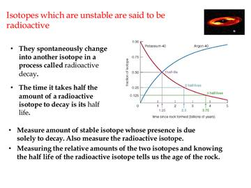
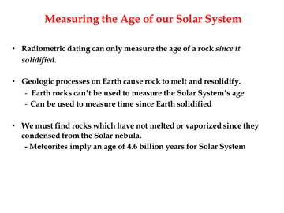

What have we learnedĐã học được gì
- Orderly motion: the nebula spun faster as it contracted (angular momentum), collisions flattened it into a disk. Two planet types: only rock and metals condensed inside the frost line; rock, metals and ices outside; larger planetesimals outside drew in H and He. [L3 p35]Chuyển động có trật tự: tinh vân quay nhanh hơn khi co lại (mômen động lượng), va chạm làm nó dẹt thành đĩa. Hai loại hành tinh: trong đường băng chỉ đá và kim loại ngưng tụ; ngoài đường băng có đá, kim loại và băng; planetesimal lớn hơn ở ngoài hút H và He. [L3 tr.35]
- Where did the Solar System come from: galactic recycling built the elements; we see stars forming in other gas clouds; we have observed disks around young stars. [L3 p40]Hệ Mặt Trời đến từ đâu: tái chế thiên hà tạo ra các nguyên tố; ta thấy sao hình thành trong các đám mây khí khác; ta đã quan sát đĩa quanh sao trẻ. [L3 tr.40]
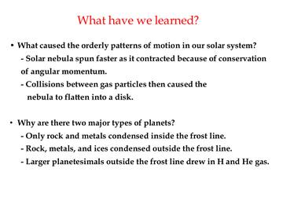

Quick Q and AHỏi đáp nhanh
Why do planets orbit in one plane and one direction?Vì sao các hành tinh quay trong một mặt phẳng và một chiều?
The nebula spun faster as it contracted (conservation of angular momentum) and collisions flattened it into a disk; planets formed in that disk. [L3 p12, p35]Tinh vân quay nhanh hơn khi co lại (bảo toàn mômen động lượng) và va chạm làm nó dẹt thành đĩa; hành tinh hình thành trong đĩa đó. [L3 tr.12, 35]
Why two types of planets?Vì sao có hai loại hành tinh?
The frost line: only rock and metal condense inside it; outside, ices also condense, planetesimals grow larger and capture H and He. [L3 p18-19, p35]Đường băng: bên trong chỉ đá và kim loại ngưng tụ; bên ngoài có thêm băng, planetesimal lớn hơn và bắt H, He. [L3 tr.18-19, 35]
Compare core accretion and disk instability.So sánh tích tụ lõi và bất ổn đĩa.
Core accretion builds a solid core first then pulls in gas, slowly (3 to 10 Myr); disk instability collapses a gas clump directly, very fast (0.1 Myr) but needs an unstable disk and does not explain the planet types. [L3 p22-25]Tích tụ lõi dựng lõi rắn trước rồi hút khí, chậm (3 đến 10 triệu năm); bất ổn đĩa làm cục khí sụp đổ trực tiếp, rất nhanh (0,1 triệu năm) nhưng cần đĩa bất ổn và không giải thích các loại hành tinh. [L3 tr.22-25]
How do we know the age of the Solar System?Làm sao biết tuổi Hệ Mặt Trời?
Radioactive dating of meteorites (rocks that never melted): about 4.6 billion years; Earth's rocks only give the time since they last solidified. [L3 p36-39]Định tuổi phóng xạ thiên thạch (đá chưa từng nóng chảy): khoảng 4,6 tỉ năm; đá Trái Đất chỉ cho thời gian từ lần đông đặc cuối. [L3 tr.36-39]
[L2 p9] = lecture L2, slide page 9. [calc] = computed here and checked in Python. [ext] = not on the slides.[L2 tr.9] = bài L2, trang slide 9. [tính] = tính ở đây và kiểm trong Python. [ngoài slide] = không có trên slide.